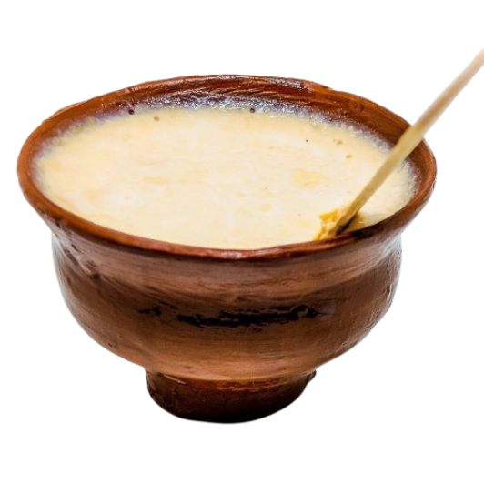

jujuDhau
Creamy Juju Dhau
Ingredients
- 1 litre full-fat milk
- 3 tbsp sugar
- 2 tbsp milk powder
- 2 tbsp plain yogurt with live cultures
- ½ tsp cardamom powder
- 1 tbsp chopped almonds (optional)
- 1 tbsp chopped pistachios (optional)


Pour the milk into a heavy-bottomed pan and bring it to a gentle boil over medium heat. Stir occasionally to prevent the milk from sticking to the bottom.
Lower the heat and simmer the milk for about 10–15 minutes, stirring regularly. This helps reduce the water content and gives the dhau its thick, creamy texture.
Add the sugar and milk powder to the warm milk. Stir well until everything is completely dissolved and the mixture becomes smooth. Turn off the heat and let the milk cool until it is warm but not hot.
Take a small bowl and mix the plain yogurt until smooth. Add it to the warm milk and gently stir until evenly combined.
Pour the mixture into small clay pots or serving bowls. Cover them and place them somewhere warm and undisturbed for about 6–8 hours, or until the yogurt becomes firm and creamy.
Once the dhau has set, refrigerate it for at least 1–2 hours. Garnish with cardamom powder, chopped almonds, or pistachios before serving.
Use full-fat milk for a richer and creamier texture. Make sure the milk is warm—not very hot—when adding the yogurt starter. Avoid moving the pots while the dhau is setting, as this can prevent it from becoming firm.

Rate the recipe
Really simple recipe and the result was amazing. I loved the thick, creamy texture and mild sweetness!
Anisha Rai
The dhau turned out so creamy and smooth! The texture was perfect, and it tasted deliciously rich.